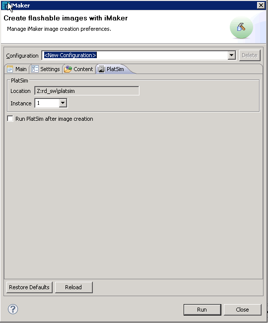

Managing image creation preferences
Before you can build a ROM image, you must define the preferences for a configuration. In iMaker,
a configuration can be thought of as a container of product and other information. Follow these steps to create a ROM image with the specified settings:
- Select the project that you want to use as the basis for image creation from carbide.c++ Project Explorer view.
- Select Open iMaker Dialog... option from the iMaker pulldown menu on the toolbar see below image. iMaker Extension will now start scanning the environtment to query
information from the underlying iMaker commandline tool. This may take a while, but this action occurs only once for each project.
- When the iMaker Dialog is opened, it is populated with data from the active environment. Default product is selected if one is configured, otherwise the first product is selected.
User can change the product using the Change... button. Example is shown bellow.

- Once data is filled in the fields, a flashable image can be created. Press
the Run button at the bottom of the dialog. Remember to add the desired targets to the selected list of targets. Usual targets include flash, core, variant etc..
Saving the preferences
To save the specified data values in the dialog to a file, do the following:
- Press the Save as...
- Choose the parent folder where to save the file, it is recommended to save under the selected project. See below image.

Specify name and press finish
- All saved preferences are visible in the configuration combobox on the top of the dialog. Any of these saved files can be activated and used for image creation.
Settings tab
To modify the values
of the variables of the selected product (or makefile), select the Settings
tab in the iMaker dialog. See the following example:

Through this tab user can override the default variable values in the iMaker core. Any modified parameter will be passed to iMaker cmd through execution command.
Content tab
The content tab allows user to add binary and data files to the image. These files can be added to different sections of the image. Currently CORE and ROFS sections are supported. Files can also be removed, hidden or changes to udeb/urel version. The Actions column provides the list of available actions.
Files cannot be added to UDA through this tab.
Table fields:
- Enable: Enablement, only enabled items are saved or taken to the image
- File: Component source location. The source file must exist in the file system.
- Target: Component target location in the device.
- Location: Image section. Possible values:
- core - core section of the image
- rofs2 - rofs2 section of the image
- rofs3 - rofs3 or customer section of the image
- Action: Action to perform with the component. Possible values:
- udeb - take udeb version of the component to the image
- udeb-add - take udeb version of the component, add the component to the specified image section if it is not already there
- urel - take urel version of the component to the image
- urel-add - take urel version of the component, add the component to the specified image section if it is not already there
- remove - remove the component from the specified image section
- hide - hide the component in the specified image section
- replace - replace the component in the image section specified, if the component does not exist then do nothing
- replace-add - Replace the component in the image section specified, if the component does not exist then add it as a new component
Right buttons:
- Add: Add a new component to the list, causes a dialog to pop-up
- Remove: Remove selected component from the list
- Duplicate: Duplicate the selected component e.g. add a new entry with same File and Target as the selected one. The entry is added below the selected entry
- Populate: Add the binaries and any resource-type files generated by all mmp files in the selected project
Platsim tab
The contents of the platsim tab will be enabled, when you select a valid platsim configuration from the main tab. The platsim configuration must define USE_PLATSIM variable, in order it to be
consider as valid. This variable must be non-empty. Users can edit the platsim configuration makefile and add USE_PLATSIM=1 then restart carbide.c++. Currently only all target is supported. All
target creates an image, which contains all image sections (core, rofsx, ...) and configures the selected platsim instance with the created image. Selecting (run platsim after image creation) checkbox causes
platsim instance to be started in the end of the image creation process.
